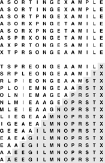

C++ Programming Robert Sedgewick - Princeton University Addison Wesley Professional Algorithms in C++, Parts 1–4: Fundamentals, Data Structure, Sorting, Searching, Third Edition C++ Programming Robert Sedgewick - Princeton University Addison Wesley Professional Algorithms in C++, Parts 1–4: Fundamentals, Data Structure, Sorting, Searching, Third Edition
9.4. Heapsort
We can adapt the basic idea in Program 9.6 to sort an array without needing any extra space, by maintaining the heap within the array to be sorted. That is, focusing on the task of sorting, we abandon the notion of hiding the representation of the priority queue, and rather than being constrained by the interface to the priority-queue ADT, we use fixUp and fixDown directly.
Using Program 9.5 directly in Program 9.6 corresponds to proceeding from left to right through the array, using fixUp to ensure that the elements to the left of the scanning pointer make up a heap-ordered complete tree. Then, during the sortdown process, we put the largest element into the place vacated as the heap shrinks. That is, the sortdown process is like selection sort, but it uses a more efficient way to find the largest element in the unsorted part of the array.
Rather than constructing the heap via successive insertions as shown in Figures 9.5 and 9.6, it is more efficient to build the heap by going backward through it, making little subheaps from the bottom up, as shown in Figure 9.9. That is, we view every position in the array as the root of a small subheap, and take advantage of the fact that fixDown works as well for such subheaps as it does for the big heap. If the two children of a node are heaps, then calling fixDown on that node makes the subtree rooted there a heap. By working backward through the heap, calling fixDown on each node, we can establish the heap property inductively. The scan starts halfway back through the array because we can skip the subheaps of size 1.
Working from right to left and bottom to top, we construct a heap by ensuring that the subtree below the current node is heap ordered. The total cost is linear in the worst case, because most nodes are near the bottom.
A full implementation is given in Program 9.7, the classical heap-sort algorithm. Although the loops in this program seem to do different tasks (the first constructs the heap, and the second destroys the heap for the sortdown), they are built around the same fundamental procedure, which restores order in a tree that is heap-ordered except possibly at the root, using the array representation of a complete tree. Figure 9.10 illustrates the contents of the array for the example corresponding to Figures 9.7 through 9.9.
Heapsort is an efficient selection-based algorithm. First, we build a heap from the bottom up, in-place. The top eight lines in this figure correspond to Figure 9.9. Next, we repeatedly remove the largest element in the heap. The unshaded parts of the bottom lines correspond to Figures 9.7 and 9.8; the shaded parts contain the growing sorted file.

Property 9.4. Bottom-up heap construction takes linear time|
This fact follows from the observation that most of the heaps processed are small. For example, to build a heap of 127 elements, we process 32 heaps of size 3, 16 heaps of size 7, 8 heaps of size 15, 4 heaps of size 31, 2 heaps of size 63, and 1 heap of size 127, so 32 . 1 + 16 . 2 + 8 . 3 + 4 . 4 + 2 . 5 + 1 . 6 = 120 promotions (twice as many comparisons) are required in the worst case. For N = 2n—1, an upper bound on the number of promotions is |
A similar proof holds when N + 1 is not a power of 2.
|
Program 9.7. Heapsort|
Using fixDown directly gives the classical heapsort algorithm. The for loop constructs the heap; then, the while loop exchanges the largest element with the final element in the array and repairs the heap, continuing until the heap is empty. The pointer pq to a[l-1] allows the code to treat the subarray passed to it as an array with the first element at index 1, for the array representation of the complete tree (see Figure 9.2). Some programming environments may disallow this usage.
template <class Item>
void heapsort(Item a[], int l, int r)
{ int k, N = r-l+1;
Item *pq = a+l-1;
for (k = N/2; k >= 1; k--)
fixDown(pq, k, N);
while (N > 1)
{ exch(pq[1], pq[N]);
fixDown(pq, 1, --N); }
}
|
This property is not of particular importance for heapsort, because its time is still dominated by the N log N time for the sortdown, but it is important for other priority-queue applications, where a linear-time construct operation can lead to a linear-time algorithm. As noted in Figure 9.6, constructing a heap with N successive insert operations requires a total of N log N steps in the worst case (even though the total turns out to be linear on the average for random files).
Property 9.5. Heapsort uses fewer than 2 N lg N comparisons to sort N elements|
The slightly higher bound 3 N lg N follows immediately from Property 9.2. The bound given here follows from a more careful count based on Property 9.4.
|
Property 9.5 and the in-place property are the two primary reasons that heapsort is of practical interest: It is guaranteed to sort N elements in place in time proportional to N log N, no matter what the input. There is no worst-case input that makes heapsort run significantly slower (unlike quicksort), and heapsort does not use any extra space (unlike mergesort). This guaranteed worst-case performance does come at a price: for example, the algorithm's inner loop (cost per comparison) has more basic operations than quicksort's, and it uses more comparisons than quicksort for random files, so heapsort is likely to be slower than quicksort for typical or random files.
Heaps are also useful for solving the selection problem of finding the k largest of N items (see Chapter 7), particularly if k is small. We simply stop the heapsort algorithm after k items have been taken from the top of the heap.
Property 9.6. Heap-based selection allows the kth largest of N items to be found in time proportional to N when k is small or close to N, and in time proportional to N log N otherwise|
One option is to build a heap, using fewer than 2N comparisons (by Property 9.4), then to remove the k largest elements, using 2k lg N or fewer comparisons (by Property 9.2), for a total of 2N + 2k lg N. Another method is to build a minimum-oriented heap of size k, then to perform k replace the minimum (insert followed by remove the minimum) operations with the remaining elements for a total of at most 2k + 2(N – k)lg k comparisons (see Exercise 9.35). This method uses space proportional to k, so is attractive for finding the k largest of N elements when k is small and N is large (or is not known in advance). For random keys and other typical situations, the lgk upper bound for heap operations in the second method is likely to be O(1) when k is small relative to N (see Exercise 9.36).
|
Various ways to improve heapsort further have been investigated. One idea, developed by Floyd, is to note that an element reinserted into the heap during the sortdown process usually goes all the way to the bottom, so we can save time by avoiding the check for whether the element has reached its position, simply promoting the larger of the two children until the bottom is reached, then moving back up the heap to the proper position. This idea cuts the number of comparisons by a factor of 2 asymptotically—close to the lg N!  N lg N – N/ln 2 that is the absolute minimum number of comparisons needed by any sorting algorithm (see Part 8). The method requires extra bookkeeping, and it is useful in practice only when the cost of comparisons is relatively high (for example, when we are sorting records with strings or other types of long keys). N lg N – N/ln 2 that is the absolute minimum number of comparisons needed by any sorting algorithm (see Part 8). The method requires extra bookkeeping, and it is useful in practice only when the cost of comparisons is relatively high (for example, when we are sorting records with strings or other types of long keys).
Another idea is to build heaps based on an array representation of complete heap-ordered ternary trees, with a node at position k larger than or equal to nodes at positions 3k – 1, 3k,and 3k + 1 and smaller than or equal to nodes at position  (k + 1)=/3 (k + 1)=/3 , for positions between 1 and N in an array of N elements. There is a tradeoff between the lower cost from the reduced tree height and the higher cost of finding the largest of the three children at each node. This tradeoff is dependent on details of the implementation (see Exercise 9.30). Further increasing the number of children per node is not likely to be productive. , for positions between 1 and N in an array of N elements. There is a tradeoff between the lower cost from the reduced tree height and the higher cost of finding the largest of the three children at each node. This tradeoff is dependent on details of the implementation (see Exercise 9.30). Further increasing the number of children per node is not likely to be productive.
Figure 9.11 shows heapsort in operation on a randomly ordered file. At first, the process seems to do anything but sorting, because large elements are moving to the beginning of the file as the heap is being constructed. But then the method looks more like a mirror image of selection sort, as expected. Figure 9.12 shows that different types of input files can yield heaps with peculiar characteristics, but they look more like random heaps as the sort progresses.
The construction process (left) seems to unsort the file, putting large elements near the beginning. Then, the sortdown process (right) works like selection sort, keeping a heap at the beginning and building up the sorted array at the end of the file.
The running time for heapsort is not particularly sensitive to the input. No matter what the input values are, the largest element is always found in less than lg N steps. These diagrams show files that are random, Gaussian, nearly ordered, nearly reverse-ordered, and randomly ordered with 10 distinct key values (at the top, left to right). The second diagrams from the top show the heap constructed by the bottom-up algorithm, and the remaining diagrams show the sortdown process for each file. The heaps somewhat mirror the initial file at the beginning, but all become more like the heaps for a random file as the process continues.
Naturally, we are interested in the issue of how to choose among heapsort, quicksort, and mergesort for a particular application. The choice between heapsort and mergesort essentially reduces to a choice between a sort that is not stable (see Exercise 9.28) and one that uses extra memory; the choice between heapsort and quicksort reduces to a choice between average-case speed and worst-case speed. Having dealt extensively with improving the inner loops of quicksort and mergesort, we leave this activity for heapsort as exercises in this chapter. Making heapsort faster than quicksort is typically not in the cards—as indicated by the empirical studies in Table 9.2—but people interested in fast sorts on their machines will find the exercise instructive. As usual, various specific properties of machines and programming environments can play an important role. For example, quicksort and mergesort have a locality property that gives them a further advantage on certain machines. When comparisons are extremely expensive, Floyd's version is the method of choice, as it is nearly optimal in terms of time and space costs in such situations.
Table 9.2. Empirical study of heapsort algorithmsThe relative timings for various sorts on files of random integers in the left part of the table confirm our expectations from the lengths of the inner loops that heapsort is slower than quicksort but competitive with mergesort. The timings for the first N words of Moby Dick in the right part of the table show that Floyd's method is an effective improvement to heapsort when comparisons are expensive. | | | 32-bit integer keys | string keys | N | Q | M | PQ | H | F | Q | H | F | 12500 | 2 | 5 | 4 | 3 | 4 | 8 | 11 | 8 | 25000 | 7 | 11 | 9 | 8 | 8 | 16 | 25 | 20 | 50000 | 13 | 24 | 22 | 18 | 19 | 36 | 60 | 49 | 100000 | 27 | 52 | 47 | 42 | 46 | 88 | 143 | 116 | 200000 | 58 | 111 | 106 | 100 | 107 | | | | 400000 | 122 | 238 | 245 | 232 | 246 | | | | 800000 | 261 | 520 | 643 | 542 | 566 | | | | Key:
Q Quicksort, standard implementation (Program 7.1)
|
M Mergesort, standard implementation (Program 8.1) PQ Priority-queue based heapsort (Program 9.5) H Heapsort, standard implementation (Program 9.6) F Heapsort with Floyd's improvement |
Exercises | 9.28 Show that heapsort is not stable. | |  9.29 Empirically determine the percentage of time heapsort spends in the construction phase for N = 103, 104, 105, and 106. 9.29 Empirically determine the percentage of time heapsort spends in the construction phase for N = 103, 104, 105, and 106.
| | 9.30 Implement a version of heapsort based on complete heap-ordered ternary trees, as described in the text. Compare the number of comparisons used by your program empirically with the standard implementation, for N = 103, 104, 105, and 106. | | 9.31 Continuing Exercise 9.30, determine empirically whether or not Floyd's method is effective for ternary heaps. | |  9.32 Considering the cost of comparisons only, and assuming that it takes t comparisons to find the largest of t elements, find the value of t that minimizes the coefficient of N log N in the comparison count when a t-ary heap is used in heapsort. First, assume a straightforward generalization of Program 9.7; then, assume that Floyd's method can save one comparison in the inner loop. 9.32 Considering the cost of comparisons only, and assuming that it takes t comparisons to find the largest of t elements, find the value of t that minimizes the coefficient of N log N in the comparison count when a t-ary heap is used in heapsort. First, assume a straightforward generalization of Program 9.7; then, assume that Floyd's method can save one comparison in the inner loop.
| | 9.33 For N = 32, give an arrangement of keys that makes heapsort use as many comparisons as possible. | |  9.34 For N = 32, give an arrangement of keys that makes heapsort use as few comparisons as possible. 9.34 For N = 32, give an arrangement of keys that makes heapsort use as few comparisons as possible.
| | 9.35 Prove that building a priority queue of size k then doing N – k replace the minimum (insert followed by remove the minimum) operations leaves the k largest of the N elements in the heap. | | 9.36 Implement both of the versions of heapsort-based selection referred to in the discussion of Property 9.6, using the method described in Exercise 9.25. Compare the number of comparisons they use empirically with the quicksort-based method from Chapter 7, for N = 106 and k = 10, 100, 1000, 104, 105, and 106. | | 9.37 Implement a version of heapsort based on the idea of representing the heap-ordered tree in preorder rather than in level order. Empirically compare the number of comparisons used by this version with the number used by the standard implementation, for randomly ordered keys with N = 103, 104, 105, and 106. |
|